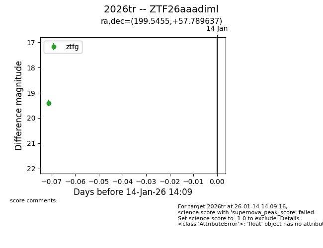
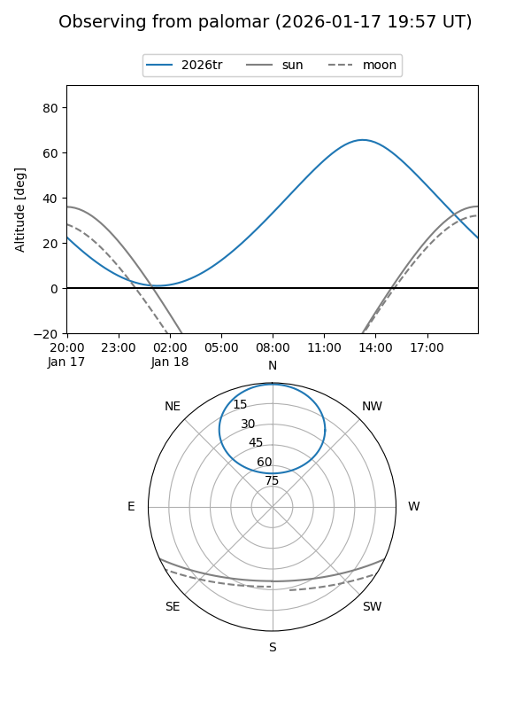
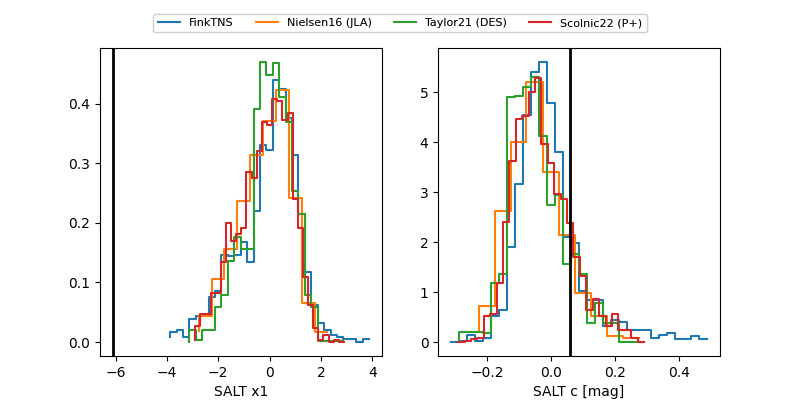

2026tr
Target 2026tr at 2026-01-16 13:05
Aliases and brokers:
FINK: link
Lasair: link
ALeRCE: link
TNS: link
YSE: link
alt names
ZTF26aaadiml (ztf,fink_ztf)
2026tr (tns,yse)
Coordinates:
equatorial (ra, dec) = 199.5455,+57.78964
equatorial (HMS+DMS) = 13:18:10.92,+57:47:22.69
galactic (l, b) = (116.0157,+58.97805)
Flags:
Photometry:
last ztfg=19.40, ztfr=19.39
1 ztfg, 1 ztfr detections
Lightcurve

Visibility


Additional plots
